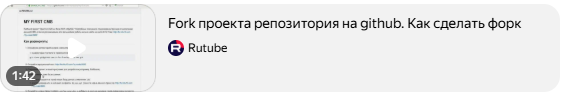

Fork и Pull Request — инструменты для совместной работы над проектами на GitHub, но они служат разным целям.
Fork — это личная копия репозитория другого пользователя, которая находится под аккаунтом пользователя. Форк позволяет экспериментировать с изменениями, не затрагивая оригинальный проект. С помощью форка можно, например:
Pull Request (PR) — это запрос на включение изменений в оригинальный проект. С помощью pull request можно предложить изменения из своего репозитория или ветки в другой репозиторий или ветку. Это способ попросить владельцев оригинального репозитория рассмотреть изменения и слить их в свой проект.
Таким образом, форк позволяет создать независимую среду для работы с кодом, а pull request — отправить внесённые изменения в оригинальный репозиторий.
Как внести вклад в чей-то репозиторий на GitHub?
Для этого необходимо:
Если вы хотите вносить свой вклад в уже существующие проекты, в которых у нас нет прав на внесения изменений путём отправки (push) изменений, вы можете создать своё собственное ответвление (fork) проекта. Это означает, что GitHub создаст вашу собственную копию проекта, данная копия будет находиться в вашем пространстве имён и вы сможете легко делать изменения путём отправки (push) изменений.
В этом уроке:
После создания форка можно вносить в него изменения, создавать новые ветки, и форк будет независим от оригинала.
Клонирование репозитория — создание локальной копии проекта с удалённого сервера
(например, GitHub или GitLab), позволяет работать над проектом на локальном компьютере, а затем
отправлять изменения обратно в удалённый
репозиторий..
Изменение кода форка — работа с собственной копией репозитория, созданной в
пространстве имён пользователя, позволяет вносить изменения в собственную копию, не
затрагивая оригинальный репозиторий..
Fork
С точки зрения автора репозитория, форк — это ответвление проекта в
собственном пространстве имён.
Это выглядит как:
Важно: форк разрешён для публичных репозиториев без разрешения, но если репозиторий закрытый, форк возможен только с разрешения автора.
Pull Request
С точки зрения автора репозитория, pull request — просьба к владельцу репозитория принять изменения.
Это выглядит как:
Важно: перед слиянием изменений в оригинальный репозиторий запрос должен пройти несколько обязательных проверок, например, Code review двух других участников команды.
Внесение собственного вклада в проекты (официальная документация)